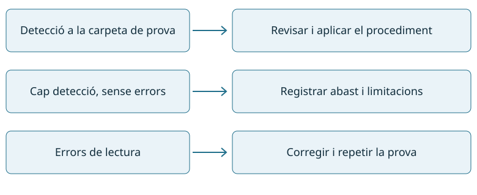
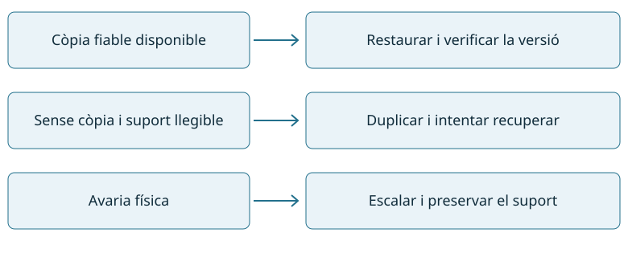

A Taller Bit, aprendrem a detectar una incidència, seguir un procediment, recuperar el servei i comprovar el resultat. Treballarem amb màquines virtuals, dades fictícies i mostres inofensives.
Un pla de contingència concreta què cal fer si una fallada de seguretat afecta el servei. Identifica responsables, canals d’avís, recursos de recuperació, prioritats i condicions per tornar a treballar. S’ha de poder seguir amb pressa, sense improvisar decisions que empitjorin l’incident.
A Taller Bit, un ordinador mostra un avís de xifrat i deixa d’obrir documents. La primera tasca és comunicar i contenir l’incident segons el pla: no connectar-hi el disc de còpies ni continuar utilitzant-lo. El responsable decideix si s’aïlla de la xarxa, quines evidències es conserven i com es recupera el servei.
Fase
Acció prevista
Evidència
Preparació
Inventari, còpies verificades i contactes.
Versió del pla i responsables.
Detecció
Confirmar símptomes i abast sense atribuir causes sense proves.
Hora, equip i alerta.
Contenció
Limitar la propagació segons instruccions.
Mesura, autorització i resultat.
Resolució
Eliminar la causa o reinstal·lar des d’una font fiable.
Procediment seguit i canvis.
Recuperació
Restaurar, actualitzar i verificar abans de reconnectar.
Proves del servei i autorització de retorn.
Revisió
Documentar què ha fallat i millorar el pla.
Informe i accions de seguiment.
Una alerta no demostra per si sola una infecció. Cal valorar impacte i urgència, i escalar quan l’acció supera les atribucions de l’operador. Font de context: INCIBE · Contingència i continuïtat.
Preparar el pla abans de l’incident
La UF4 destaca que el pla s’ha de provar. A Taller Bit, completa una fitxa amb el servei crític, el responsable i el seu substitut, com avisar si el correu falla, on és la còpia verificada i quines proves autoritzen la tornada al servei.
Exemple: el taller accepta perdre com a màxim una hora de dades i necessita recuperar l’agenda en dues hores. Una còpia diària no compleix el primer objectiu. Una còpia horària tampoc garanteix el segon: cal cronometrar la restauració i comprovar que l’aplicació funciona.
No tanquem processos ni esborrem fitxers només perquè tinguin un nom desconegut. Cal seguir el pla i les instruccions del responsable, conservar evidències i evitar accions que destrueixin informació útil.
3.2 · Criteri 3.b
02 · Virus i programari maliciós
El malware és programari que actua amb finalitats perjudicials. Classifiquem les mostres segons propagació, funció i comportament; una mateixa amenaça pot encaixar en diverses categories.
Tipus
Característica
Indici que cal contrastar
Virus
S’associa a un fitxer o element hoste i es replica quan s’executa.
Fitxers alterats i deteccions vinculades.
Cuc
Es propaga entre sistemes sense necessitar enganxar-se a un fitxer hoste.
Connexions i propagació anòmales.
Troià
Es presenta com a programari útil o legítim.
Accions ocultes després de la instal·lació.
Ransomware
Bloqueja o xifra informació per exigir un rescat; pot anar acompanyat de robatori de dades.
Documents inaccessibles i nota de rescat.
Spyware
Recull informació sense una autorització adequada.
Captura o enviament de dades no justificat.
Adware
Mostra publicitat; segons el comportament pot ser intrusiu o no desitjat.
Redireccions i anuncis persistents.
El phishing és una tècnica d’engany, no una família de programa. Pot servir per distribuir un troià. «Equip lent» tampoc identifica un virus: pot haver-hi falta d’espai o una aplicació legítima consumint recursos.
T10 · Anàlisi de comportament
Treballarem amb informes de sandbox, captures i registres preparats pel docent, sense executar malware real. Per a cada cas identifica vector d’entrada, accions observades, categoria probable, impacte i informació que falta. Separa sempre observació i hipòtesi.
Cas resolt: una aplicació que es presenta com a visor de documents envia fitxers sense informar l’usuari. El disfressament suggereix un troià; l’enviament apunta a sostracció d’informació. Cal analitzar destinació i dades transmeses abans de concloure l’abast.
Entrada, propagació i dany: tres preguntes diferents
Pregunta
Exemple
Mesura relacionada
Com entra?
Instal·lador fals rebut per correu.
Verificar la font i no executar adjunts inesperats.
Com s’estén?
Aprofita una vulnerabilitat d’altres equips.
Aplicar pedaços i contenir la comunicació afectada.
Què fa?
Xifra documents i roba informació.
Activar el pla, protegir còpies i investigar l’abast.
Un keylogger registra pulsacions; una porta del darrere facilita un accés ocult; un rootkit intenta ocultar activitat o presència, i un bot pot rebre ordres remotes. Aquestes funcions poden conviure en un mateix malware. La gravetat depèn de les dades afectades, els permisos assolits, l’abast i la recuperació disponible, no només del nom de la família.
Exercici T10: afegeix a cada informe una mesura preventiva i una de resposta. Explica quina evidència et faria canviar la classificació inicial.
3.4 i 3.8 · Criteri 3.c
03 · Actualitzacions i vulnerabilitats
Una vulnerabilitat és una debilitat que es pot aprofitar. Un pedaç pot corregir-la, però cal verificar que s’ha instal·lat i que el servei continua funcionant. Actualitzar la llista de paquets no és el mateix que actualitzar els programes.
Inventaria versió del sistema i aplicacions rellevants.
Consulta l’avís del fabricant, versions afectades, requisits i possibles reinicis.
Prepara recuperació i prova el canvi a la VM autoritzada.
Aplica l’actualització en la finestra prevista.
Comprova versió final, reinicis pendents i funcionament. Registra els errors.
Linux Debian/Ubuntu de laboratori
sudo apt update
apt list --upgradable
sudo apt upgrade
Revisa la proposta abans de confirmar. No apliquis ordres d’actualització massiva a equips de producció durant l’exercici. En distribucions amb DNF s’utilitza el seu gestor i la documentació de la versió.
Windows de laboratori
Obre Windows Update, consulta les actualitzacions pendents i aplica les autoritzades pel docent. Després del reinici, comprova l’historial, l’estat i la versió. Una descàrrega pendent no demostra que el pedaç estigui aplicat.
Evidència individual de 3.c: estat inicial, actualització real efectuada, comprovació posterior i proposta de periodicitat. Les actualitzacions de sistema, de l’antivirus i de la seva base de signatures són tasques relacionades però diferents.
3.3 · Criteri 3.d
04 · Origen i autenticitat d’aplicacions
Abans d’instal·lar una aplicació, comprova la font, l’editor i les evidències d’integritat. Un hash comprova si el fitxer coincideix amb una referència; no identifica l’autor si aquesta referència no és fiable.
Comprovació
Què aporta?
Límit
Web o repositori oficial
Canal de distribució identificat.
Cal revisar domini i confiança en el repositori.
SHA-256
Coincidència amb el resum publicat.
Un hash publicat pel mateix lloc fraudulent no garanteix autenticitat.
Signatura de codi
Integritat i vinculació amb un signant segons la validació.
Una signatura vàlida no garanteix absència de malware.
Compara el resum complet amb la font oficial. A Windows, revisa també editor i estat de signatura. Si el resultat és absent, invàlid o inesperat, documenta’l i atura la instal·lació fins a aclarir-lo; no ho resolguis desactivant la comprovació.
Exercici: compara un fitxer intacte i una còpia alterada preparada pel docent. Explica per què discrepa el hash i quina font dona confiança a la referència.
3.4 · Criteri 3.e
05 · Protecció i desinfecció
Una eina antimalware necessita motor, signatures actualitzades i un procediment de resposta. La detecció pot ser correcta o un fals positiu; «sense deteccions» no garanteix que el sistema estigui net. Una anàlisi manual tampoc equival a protecció contínua.
Actualitza les signatures amb el servei de la distribució o amb freshclam, segons la configuració preparada. Si el servei ja està funcionant, no iniciïs una segona actualització simultània: consulta’n el registre i comprova la data.
El docent proporciona el fitxer de prova inofensiu EICAR en la carpeta de laboratori. Comprova detecció, registra el resultat i trasllada’l a la quarantena amb l’opció --move acordada. No introdueixis mostres reals ni desactivis proteccions per executar-les. La prova verifica la resposta a EICAR, no l’eficàcia davant de totes les amenaces.
Revisa el codi de sortida: 0 indica absència de deteccions, 1 indica detecció i 2 indica error. Conserva el registre, comprova la quarantena i repeteix l’anàlisi de la carpeta d’origen. Font: ClamAV · Anàlisi i opcions.
Automatització
Programa amb cron o el planificador disponible una anàlisi de la carpeta de prova i comprova una execució real. Usa rutes absolutes, un compte amb permisos suficients i un registre que permeti distingir detecció i error. A la fitxa anota hora prevista, hora real, base de signatures, resultats i acció següent.
La neteja d’un fitxer detectat no prova que un sistema compromès sigui fiable. El pla pot requerir reinstal·lació, restauració i canvi de credencials des d’un equip net.
Com interpretem una detecció?
Les signatures reconeixen patrons coneguts; l’heurística i l’anàlisi de comportament busquen indicis sospitosos. Les capacitats depenen del producte i de la configuració. Un antivirus de fitxers i un tallafocs tenen funcions diferents.
Resultat
Què significa
Què comprovem
Detecció correcta
La mostra de prova és identificada.
Ruta, nom de detecció i quarantena.
Fals positiu
Un fitxer legítim és marcat com a sospitós.
Origen i validació abans de restaurar-lo.
Fals negatiu
L’amenaça no és detectada.
Altres indicadors; un resultat net no és una garantia.
Error d’anàlisi
L’eina no ha pogut examinar el fitxer.
Permisos, ruta i registre d’errors.
Cas resolt: una anàlisi acaba sense deteccions però amb errors de lectura. No podem afirmar que tots els fitxers estiguin nets: cal corregir l’accés autoritzat i repetir la prova. No afegim exclusions generals per eliminar l’avís.

Una anàlisi sense deteccions no equival sempre a una comprovació completa.
3.5 · Criteri 3.f
06 · Recuperació de dades
Primer determina què ha passat: esborrat accidental, sistema de fitxers malmès, avaria física o dades xifrades. Si hi ha una còpia fiable, restaurar-la acostuma a ser més controlable que intentar reconstruir fitxers esborrats.
Quan cal recuperar dades del suport, evita escriure-hi. Treballa sobre una imatge o duplicat de laboratori i guarda els resultats en un destí diferent. Una avaria física real requereix escalar; repetir proves pot empitjorar-la.
T12 · PhotoRec sobre una imatge de prova
Rep la imatge preparada pel docent i el manifest dels fitxers esperats. Conserva l’original i treballa amb una còpia.
Obre PhotoRec i selecciona la imatge correcta. Indica el tipus de sistema de fitxers segons les instruccions del cas.
Tria els formats necessaris i el destí separat on es desaran els resultats.
Executa la recuperació i examina els fitxers obtinguts.
Compara contingut i hash quan hi hagi referència. Registra fitxers complets, incomplets i absents.
PhotoRec cerca signatures de formats i pot perdre noms i estructura de carpetes. La recuperació no està garantida, especialment després de sobreescriptura o TRIM. TestDisk té altres funcions, com analitzar particions; no apliquis reparacions a cegues. Font: CGSecurity · PhotoRec pas a pas.
Escollir una via de recuperació
Situació
Primera opció
Comprovació
Fitxer esborrat amb còpia verificada
Restaurar una versió anterior a la pèrdua.
Contingut i data de la versió.
Esborrat sense còpia
Aturar les escriptures i treballar sobre un duplicat.
Fitxers complets i destí separat.
Suport amb errors físics
Escalar al responsable o a un servei especialitzat.
Evitar intents repetits sobre l’original.
Dades xifrades per un incident
Contenir i recuperar des d’una còpia fiable segons el pla.
Eliminar la causa abans de reconnectar.
La RA2 prepara i gestiona les còpies; a RA3 les utilitzem davant d’una incidència. Exemple: una còpia de les 08.00 restaurada després d’una pèrdua a les 11.00 pot no incloure les modificacions d’aquestes tres hores. Cal registrar també què no hem pogut recuperar.

La via de recuperació depèn de la situació i dels recursos disponibles.
3.6 i 3.7 · Continguts del RA3
07 · Certificats i signatura electrònica
Una clau pública es pot compartir; la privada es protegeix. La signatura digital permet comprovar la integritat i la vinculació amb una clau signant. Xifrar protegeix la confidencialitat: un document signat pot continuar sent llegible per tothom.
Un certificat associa una clau pública a una identitat sota les condicions de l’emissor. Cal comprovar identitat, cadena de confiança, vigència i revocació quan correspongui. Un certificat de laboratori autosignat no acredita una identitat davant de tercers ni equival a un certificat qualificat.
Obtenció d’una identificació digital
Consulta la documentació del prestador escollit: requisits, sol·licitud, acreditació d’identitat, emissió, instal·lació, còpia protegida i revocació. A classe s’utilitzen identificacions de prova preparades pel docent; no cal sol·licitar ni lliurar un certificat personal real. Documenta què seria diferent en un procediment real.
Signar i verificar un fitxer amb GnuPG
En un perfil de laboratori, crea una identitat fictícia quan l’assistent ho demani. Protegeix la clau privada amb una frase de pas que no s’inclou a l’informe.
La signatura separada acompanya el document. Verifica el fitxer original i després una còpia modificada: el segon resultat ha de mostrar que ja no coincideix. Confirma l’empremta de la clau per un canal fiable abans de confiar en la identitat. No s’ha de confondre una verificació matemàtica correcta amb la confiança en el signant.
Documents PDF i missatgeria
Amb l’aplicació i el certificat de prova del docent, signa un PDF, desa’l amb un nom nou i obre el panell de signatures per comprovar integritat i certificat. Una imatge de la signatura manuscrita enganxada al PDF no és aquesta comprovació criptogràfica.
En dos comptes de correu de laboratori, configura OpenPGP o S/MIME segons el guió de l’eina. Intercanvia les claus públiques o certificats i verifica’n la identitat. Envia un missatge signat, comprova la signatura al receptor i contrasta-ho amb un missatge també xifrat. Si no hi ha correu operatiu, el docent prepara missatges exportats per verificar, i queda pendent la demostració d’enviament.
Aquests continguts s’inclouen al RA3 perquè apareixen a la taula actual, encara que també es reprenguin al RA4. No es crea un criteri nou per numerar-los.
3.8, 3.9 i 3.10 · Aplicació transversal
08 · Documentació tècnica i incidències
Un procediment útil identifica producte i versió, requisits, passos, resultat esperat i com tornar enrere. Abans d’executar una ordre, comprova que la documentació correspon al teu sistema i entén què modificarà.
T13 · Resolució guiada
Cas: una anàlisi programada no s’executa. El registre mostra que el compte no pot llegir la carpeta de prova. Consulta el manual i segueix aquest guió: confirmar l’hora i l’error, comprovar compte i permisos, aplicar el mínim canvi necessari, repetir la tasca i verificar el registre. No ho resolguis donant control total a tothom.
Fitxa d’incidència
Camp
Informació
Identificador i temps
Codi, detecció, inici i final de les actuacions, amb zona horària.
Abast
Equip, servei i usuaris afectats, amb dades mínimes.
Evidències
Alerta, registre, versió i fets observats; hipòtesis separades.
Accions
Responsable, instrucció seguida, autorització i resultat.
Recuperació
Proves del servei, fitxers verificats i limitacions.
Tancament
Qui valida el retorn, seguiment i mesures preventives.
Exemple: «11:42: clamscan no pot llegir /srv/prova» és un fet del registre. «L’equip està infectat» seria una hipòtesi no demostrada. El tancament necessita una execució correcta i una comprovació del resultat.
En T14 s’aplica el pla de contingència a un incident simulat, es recuperen dades de prova i es lliura un informe. S’utilitzen indicadors ficticis i fitxers inofensius, mantenint la distinció entre simulació i actuació real.
Alerta, incident i decisió
Una alerta és un senyal que cal valorar. Un incident requereix actuació perquè afecta o amenaça la seguretat. Un IDS observa i avisa; un IPS pot bloquejar segons la configuració. HIDS indica observació a l’equip i NIDS, a la xarxa. No substitueixen la interpretació del tècnic.
Exemple d’informe breu: a les 10.05 falla la tasca programada; el registre indica «Permission denied». A les 10.12 es comprova el compte executor i el permís de lectura. A les 10.20 s’aplica el canvi autoritzat; a les 10.25 l’anàlisi acaba i genera un registre verificable. Es tanca després de comprovar la següent execució programada. No hi ha evidència suficient per atribuir el problema a un atac.
M0226 · Seguretat informàtica
Pràctiques RA3
Cinc treballs, T10–T14, amb el mateix pes dins Pt. Els exercicis guiats s’integren en les sessions i aporten evidències individuals. Les ponderacions i notes mínimes són les de Programació i avaluació.
T10 · Classificació del malware
3.b · Contingut 3.2 · 60 min.
Analitza tres informes de sandbox preparats pel docent: un programa aparentment legítim que envia dades, propagació entre equips i xifrat de documents. Identifica categoria probable, evidències, impacte i mesures inicials. No executis mostres reals. Lliura una taula amb fets, hipòtesis i informació pendent.
T11 · Instal·lació, prova i actualització de ClamAV
3.e · Contingut 3.4 · Sessió 57 i continuació a la 58.
Segueix el guió de ClamAV. Demostra instal·lació, signatures actualitzades, detecció d’EICAR i quarantena. A la continuació programa una anàlisi i comprova’n el registre. Anota errors i no interpretis un error com una anàlisi neta.
Lliurament: versions, prova de detecció, quarantena i execució programada. Valoració: instal·lació i actualització (3), prova i resposta (4), automatització i registre (3).
T12 · Recuperació de dades
3.f · Contingut 3.5 · 60 min.
Sobre la imatge de prova proporcionada, segueix el procediment de recuperació. Desa els resultats en un altre destí, compara’ls amb el manifest i identifica què s’ha pogut recuperar. Lliura fitxa de procediment i resultats, sense presentar fitxers incomplets com a recuperats correctament.
Valoració: preparació i preservació (3), execució (3), verificació i limitacions (4).
T13 · Resoldre una incidència amb documentació
3.a i 3.e · Continguts 3.8–3.10 · Sessions 65–66.
Resol el cas de permisos que impedeixen una anàlisi programada. Consulta documentació de la versió, proposa una correcció mínima i comprova una nova execució. A la sessió següent completa l’informe amb la cronologia, el registre inicial/final i la comprovació de tancament.
Valoració: ús del procediment (3), diagnòstic i correcció (4), informe verificable (3).
T14 · Incident integrador
3.a, 3.b, 3.e i 3.f · Continguts 3.1, 3.2, 3.4, 3.5, 3.9 i 3.10 · 60 min.
El docent lliura una alerta fictícia, una VM preparada i una còpia de dades. En 10 min, identifica impacte i activa el pla. En 15 min, aplica l’aïllament de laboratori i comprova la detecció del fitxer de prova. En 20 min, recupera dades i verifica el servei. Dedica els darrers 15 min a la cronologia i a justificar el retorn o l’escalat. No s’executa malware real.
Valoració: pla i decisions (3), actuació i recuperació (4), verificació i informe (3).
Exercicis guiats i evidències individuals
Actualització · 3.c: actualització real de la VM, versió inicial/final i prova funcional a la sessió 54.
Autenticitat · 3.d: comprovació de font, hash i signatura d’una aplicació de prova a les sessions 55–56.
Identificació i signatura · 3.6–3.7: parell de claus de prova, verificació de fitxer intacte/alterat, certificat de laboratori, PDF signat i missatge signat verificat a les sessions 61–63.
Pe3 dura una hora. Es comproven els criteris 3.a–3.f i els continguts treballats. *3.g es valida a l’apartat independent de competència digital.
M0226 · Seguretat informàtica
RA3 · Criteris i continguts
Nota del RA: Pt 20%, Pe 70% i Gr 10%, amb les condicions de la programació general.
Criteris d’avaluació del mòdul
Criteri
Descripció
Evidència
3.a
Segueix plans de contingència per actuar davant fallades de seguretat.
T13 i T14: aplicació del pla
3.b
Classifica els principals tipus de programari maliciós.
T10: classificació raonada
3.c
Realitza actualitzacions periòdiques dels sistemes per a corregir possibles vulnerabilitats.
Verifica l'origen i l'autenticitat de les aplicacions que s'instal·len en els sistemes.
Exercici de font, hash i signatura
3.e
Instal·la, prova i actualitza aplicacions específiques per a la detecció i eliminació de programari maliciós.
T11 i T14: instal·lació, prova i actualització
3.f
Aplica tècniques de recuperació de dades.
T12 i T14: recuperació verificada
3 · Aplicació de mecanismes de seguretat activa
Contingut
Descripció
3.1
Fallades de seguretat: plans de contingència.
3.2
Virus i programes maliciosos.
3.3
Utilització de mecanismes per a la verificació de l’origen i l’autenticitat d’aplicacions.
3.4
Instal·lació, prova, utilització, actualització i automatització d’eines per a la protecció i desinfecció contra programari maliciós.
3.5
Utilització de tècniques de recuperació de dades.
3.6
Sistemes d’identificació: signatura electrònica, certificat digital.
3.7
Obtenció d’identificacions digitals; utilització de signatura electrònica, especialment en documents i de missatgeria electrònica, seguint la documentació que descriu els procediments.
3.8
Interpretació i utilització com a ajuda de documentació tècnica.
3.9
Detecció i resolució d’incidències seguint les instruccions pertinents.
3.10
Documentació de les incidències de seguretat.
Criteri del centre · Activitat independent
*3.g Aplica els procediments establerts en la competència digital A2C3 (2.3 Compromís ciutadà en tecnologies digitals) utilitzant els equipaments, eines i aplicacions informàtiques adients, amb criteris de qualitat.
Activitat CD1 · A2C3, vinculada a AEA7. Treball autònom proposat, lliurament i validació separats a Moodle. No s’inclou a Pe3 ni als pesos del RA.